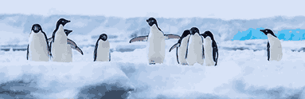

Scientific name
Spheniscidae
Weight
2–80 lbs.
Height
1.25–3.5 ft.
Habitats
Oceans, coasts
Penguins are a group of aquatic, flightless birds that belong to the family Spheniscidae.
While they cannot fly through the air, they are widely considered to "fly" through the
water with incredible agility. Almost all of the 18 known species live in the Southern
Hemisphere, ranging from the icy coasts of Antarctica to the tropical Galápagos Islands,
which is home to the only species that occasionally crosses north of the equator.
Penguins may not be able to fly across the sky, but they can fly underwater as well as any fish.
Instead of wings, these birds have flippers that can propel their streamlined bodies up to 15 miles
per hour through the sea in pursuit of a meal.
Penguins evolved approximately 60 million years ago, originating around New Zealand and Australia rather than Antarctica. Descended from flying seabirds, they adapted over millions of years to become flightless, deep-diving specialists. Their evolution was driven by climate changes, with most modern species appearing in the last 3 million years.
Origins (Paleocene Epoch): The earliest ancestors appeared around 60-68 million years ago, shortly after the Cretaceous–Paleogene extinction event, in the temperate waters of the Zealandia continent (present-day New Zealand).
Early Evolution: Fossil findings, such as Waimanu, show that early penguins were already flightless, with wings adapted for swimming, though they likely still used their feet for propulsion more than modern species.
Early Evolution: Fossil findings, such as Waimanu, show that early penguins were already flightless, with wings adapted for swimming, though they likely still used their feet for propulsion more than modern species.
Adaptation and Dispersion: Over 22 million years, they spread across the Southern Hemisphere, adapting to diverse environments, from the icy Antarctic to the warmer Galapagos Islands.
Evolutionary Pace: Studies suggest penguins are some of the slowest-evolving birds, with their evolution heavily tied to the contraction and expansion of ancient ice sheets.
Human Discovery: The first written records of penguins date to the late 1400s/early 1500s, with Portuguese sailors observing African penguins and Magellan's crew describing them during their 1519-1522 voyage.
Penguins are remarkably diverse, with habitats spanning from the freezing ice of Antarctica to the tropical warmth of the Galápagos Islands. While they are almost exclusively found in the Southern Hemisphere, their specific environments vary significantly by species.
Species like the Emperor and Adélie penguins are "true" Antarctic penguins, spending their lives on the continent or the surrounding sea ice.
Physical Features: Sea ice, icebergs, and ice shelves provide platforms for breeding.
Survival Tactics: To endure temperatures as low as -50°C, they form dense huddles for warmth.
Examples: Emperor, Adélie, Chinstrap, and Gentoo penguins.
Many species live in moderate climates in South America, Africa, and Australia.
Landscapes: They inhabit rocky shores, sandy beaches, and even coastal forests.
Nesting: Unlike Antarctic species that balance eggs on their feet, temperate penguins often nest in underground burrows or under thick vegetation to stay cool.
Examples: African (Jackass), Magellanic, and Humboldt penguins.
The Galápagos Penguin is the only species found at the equator.
Adaptations: They survive the tropical sun by sheltering in shaded lava crevices and panting to release heat.
Ocean Currents: Their survival depends on the Humboldt and Cromwell Currents, which bring cold, nutrient-rich water to their tropical home.
Penguins are vital to the health of the Southern Hemisphere, acting as essential links between the ocean and land by transporting marine nutrients through their guano, which fertilises otherwise barren coastal soils. As both predator and prey, they maintain the delicate balance of the food web, controlling populations of fish and krill while providing a critical food source for larger animals like leopard seals and orcas. Furthermore, they serve as crucial indicator species; because they are highly sensitive to environmental shifts, monitoring their population health allows scientists to track the broader impacts of climate change and overfishing on the world's oceans.
1. Where do most penguins live?
Antarctica2. What do penguins eat?
Grass3. Can penguins fly?
Yes